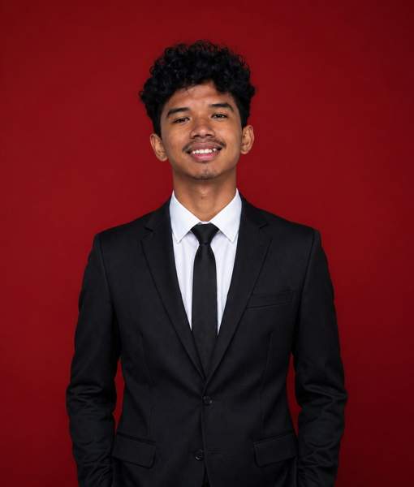

a kid who loves connecting data analysis with real-world needs. I enjoy turning numbers and models into recommendations people can actually act on.
I'm Muhammad Dafi Alvaro, an Information Systems student at Universitas Multimedia Nusantara with a strong focus on data and business analysis.
My academic background covers a broad range of technical foundations: web development with HTML, object-oriented programming in C++ and Java, data science and machine learning with Python, and database management with SQL/MySQL. I also apply these skills through tools like Tableau and Power BI to communicate findings clearly.
My core strength lies in bridging the technical and strategic sides of a problem: conducting rigorous analysis, building and evaluating predictive models, and translating the results into actionable business recommendations that stakeholders can actually use.
I believe the best analysis is not the most complex one; it is the one that answers the right question, clearly and confidently.

S1 Sistem Informasi · Big Data
Relevant Coursework:
IPA
Sucofindo · South Jakarta, Indonesia
KPN Corp · Setiabudi, Jakarta
Majelis Permusyawaratan Kelas
SMAN 8 Tangerang
Surfinclo · Bali, Indonesia
Komisi Pemilihan Umum (KPU) · Tangerang, Banten
Compared six models to predict students' depression levels from the PHQ-9 questionnaire. The results can serve as the basis for an early-warning system so campuses can step in sooner.
A two-stage system to filter hate speech and sarcasm on Twitter/X. I tested several approaches and picked the most accurate one as the basis for more reliable content moderation.
Grouped individuals by lifestyle and health history using the public BRFSS 2020 dataset. Segmentation like this helps decide which groups need attention first.
Six interactive Tableau visualizations to read traffic accident patterns in New York City, covering victims, causes, timing, and location. Designed so even a non-technical reader can grasp the insights at a glance.
An app to help first-time importers and SMEs estimate import costs and choose a logistics provider. Built from a needs analysis of two user segments.
Requirements AnalysisUX DesignAn automotive workshop app concept aimed at improving service efficiency, complete with a cost plan and a map of team responsibilities.
Project ManagementUX DesignA web platform connecting individual skills with company needs through training courses.
DatabaseHTMLA digital book-lending system to manage transactions and monitor library stock.
MySQLVisual StudioA digital mental health service app for online consultations with psychologists and psychiatrists.
UX DesignA public transport information system for more environmentally friendly access to transit.
UX DesignA management information system for Padang restaurants to streamline daily operations.
JavaOOPNative or bilingual proficiency
Professional working proficiency
Got a question about my projects, or want to talk data and business? Drop me an email.